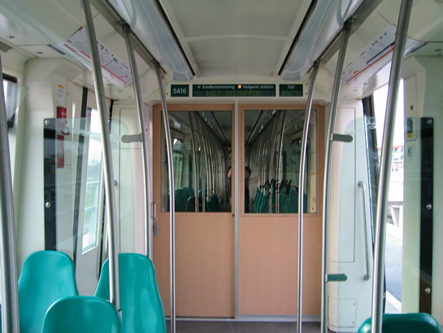
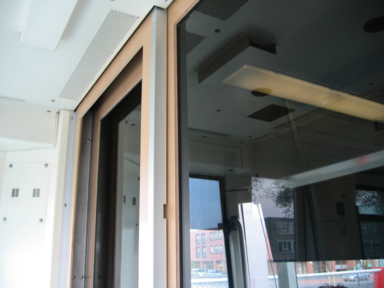
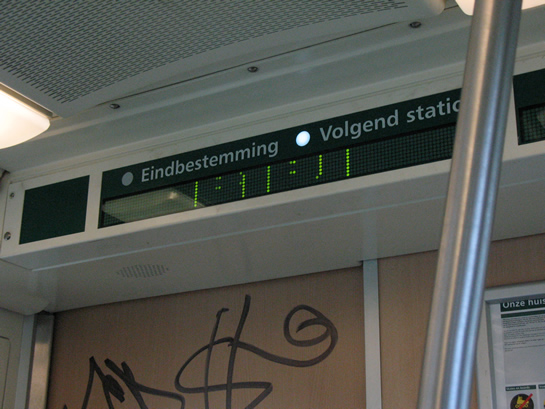

Proef rijtuig 5416 afgerond en meer nieuws...
- dinsdag 02 december 2008 10:14
- Geschreven door Rik
De cabinewand van rijtuig 5416 met daarin de geblindeerde ruiten, is onlangs vervangen voor een normaal exemplaar, zónder ruiten. Rijtuig 5416 werd in april van dit jaar voorzien van de afwijkende cabinewand, in het kader van een proef voor de nieuw aan te schaffen RandstadRail-rijtuigen. Een cabinewand met (geblindeerde) ruiten zou de sociale veiligheid ten goede komen, een pré voor het nieuwe materieel.
Echter, een merendeel van het rijdend metropersoneel is ontevreden over de ruit, al dan niet geblindeerd. Dit komt vooral door de weerkaatsing van licht in de voorruit, bij het rijden in het donker of bij het rijden door tunnels. Het is niet bekend of de (geblindeerde) ruiten in de cabinewand alsnog in de nieuwe rijtuigen voor RandstadRail opgenomen wordt.

De geblindeerde ruiten in de cabinewand van rijtuig 5416.

De ruiten gezien vanuit de bestuurderscabine.
Nieuwe deuren
De remise 's-Gravenweg is voor een deel voorzien van nieuwe deuren. De oude, blauwe "garagedeuren" zijn vervangen door transparante deuren met een donkerrood frame. In een eerder stadium werden dezelfde deuren al geplaatst op de sporen 325 (beide zijden) en 324 (westelijke zijde). Nu is dat ook het geval voor de sporen 321 t/m 323 aan de westelijke zijde.
Nieuwe software
De Oplaadautomaten en de Verkoop & Oplaadautomaten voor de OV-Chipkaart zijn deze week voorzien van nieuwe software. De nieuwe software is een verbetering voor de reiziger. Dit komt omdat de gebruikersinterface aanzienlijk verbeterd is. De gebruiker kan nu alle stappen die hij/zij doorloopt blijven zien in het scherm. Op dit moment maken er in het vervoersgebied van de RET tussen de 75.000 en 80.000 personen gebruik van een OV-Chipkaart. Medio 2007 moet de OV-Chipkaart het enige geldige vervoersbewijs worden voor de Rotterdamse metro. In de loop van 2007/2008 geldt dit ook voor tram en bus.
Routeinformatiepanelen MG2/1 - SG2/1
Steeds meer rijtuigen van de series 5300 en 5400 worden voorzien van een iets gewijzigd routeinformatiepaneel. De afwisselend oplichtende gloeilampjes voor het volgend station en de eindbestemming worden vervangen door witte LED-lampjes. In tegenstelling tot de gloeilampjes hebben LED-lampjes een langere levensduur en zijn ze schokbestendig. Met de komst van de LED-lampjes krijgt de reiziger altijd de juiste informatie getoond, mits de ingestelde route juist is.

De gloeilamp is vervangen door een wit gekleurd LED-lampje.
Wachtruimten Kralingse Zoom
Op station Kralingse Zoom zijn op het eilandperron van de sporen 2 en 4 enkele wachtruimten verwijderd aan de oostzijde van het perron. Dit is het perron dat grenst aan rijksweg A16. De ruimten zijn verwijderd in verband met overlast van junks e.d. Daarnaast wordt er nauwelijks gehalteerd aan het einde van het perron, doordat er geen vierwagentreinen ingezet worden op de Calandlijn.
Dienstregeling kerstvakantie en Oud & Nieuw
Van woensdag 27 december t/m vrijdag 5 januari geldt de vakantiedienstregeling voor een groot deel van de RET-lijnen. Op 1e en 2e Kerstdag geldt een zondagsdienstregeling. Op Oudejaarsdag stoppen de metro's, trams, bussen en RandstadRail eerder met rijden. Op Nieuwjaarsdag geldt een zondagsdienstregeling maar voor zover bekend wordt de dienst niet later opgestart dan de dienstregeling aangeeft.
2007
Vermoedelijk is dit het laatste nieuwsitem van 2006. Ook in 2007 zullen we verslag uitbrengen van alle ontwikkelingen rondom de Rotterdamse metro en RandstadRail: in de realiteit en in Microsoft Train Simulator of de opvolger daarvan. Het team van retmetro.nl wenst iedereen prettige kerstdagen en een voorspoedig en gezond 2007!